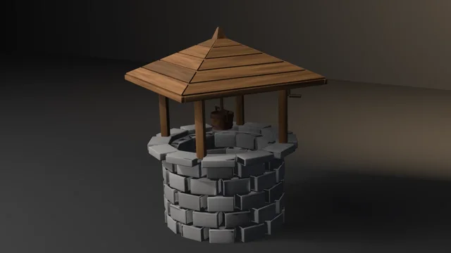

Shipping Crate
A procedural shipping crate through UVs, bake, LOD, collider, and Unity glTF, asserting recomputed budgets rather than an API contract.
showcase/planet-rover/
A procedural six-wheeled planetary science rover in the rocker-bogie tradition on a patch of rocky red-grey regolith — a cream warm-electronics body with gold-foil insulation blankets quilted into puffed cells, anodised corner posts and a trimmed deck carrying instrument boxes, sample inlets, a calibration target, a UHF can and a whip; a finned radioisotope power unit on struts between two radiator fin banks; on each side a rocker pivoting on a boss in the body side through its eye and pin, and a bogie pinned in a clevis on its front end, the two rockers linked through cranks and links to a differential bar on the deck so they turn equal and opposite; six 0.50 m aluminium drum wheels with 24 chevron grousers, six curved titanium flexure spokes and a drive actuator each, the four corners hanging from steering actuators through C-brackets; a camera mast with a laser telescope window, two camera barrels and navigation cameras; a high-gain dish on a two-axis gimbal; a 5-DOF arm whose turret drills a boulder; cable harnesses along every leg, the mast and the arm; ruts trailing behind both wheel lines and 19 broken rocks, the regolith fitted so every wheel sinks into it — through UVs, bake, LOD, collider, and Unity glTF, asserting recomputed budgets rather than an API contract.
Rendered headless by the showcase piece itself. Select it to enlarge.
category Vehicles
blender --background --python showcase/planet-rover/planet_rover.py --
A showcase piece, not an example, and the sixth in the vehicles category. It builds a procedural six-wheeled planetary science rover in the rocker-bogie tradition (generic: no agency marks, flags or text), standing on a patch of rocky red-grey regolith with its arm reaching down to drill a boulder:
The stance is set by named constants: each rocker deflects 4° (left up, right down) and the bogies sit at −6° and +5° on their rockers. The differential bar turns so each link stays square to the rover's axis. The regolith is built to carry that stance: a closed-form field, the two ruts, and six Gaussians fitted by a 6×6 solve so the surface passes through each wheel's contact height with the grouser tips 12 mm into it. The fitted Gaussians are long across the track and short along it, so each wheel sits level across its width.
It asserts budget conformance of the generated result. It does not witness an API contract. "It rendered without error" is not a check.
Composes skills mesh-editing-and-bmesh, bake-high-to-low, depsgraph-and-evaluated-data, engine-export-presets, and snippets bake_normal_high_to_low.py, setup_bake_target_image.py, lod_chain.py / decimate_to_budget.py, convex_hull_collider.py, export_preset_unity.py (helpers copied inline, not imported).
Intended size: 2.70 m across the wheels' outer faces, 3.35 m from the power unit's fins to the turret, 2.10 m from the wheels' contact plane to the top of the mast head; a 2.05 m wheelbase on 0.51 m wheels. The regolith patch is 4.86 × 3.71 m. The origin is under the patch, so it lands on its base.
Every budget is declared as a named constant. Every gate recomputes its value from the mesh, materials, UVs, evaluated LOD, collider, or export file.
| Axis | Declared | Measured (5.2.1) |
|---|---|---|
| Base triangles | 45600–46600 | 46096 |
| LOD1 ratio | 0.32–0.62 of base | 0.5000 |
| LOD2 ratio | 0.10–0.35 of base | 0.2189 |
| Materials | exactly 9 distinct; ≥2260 paint, ≥1140 foil, ≥5820 aluminium, ≥8390 anodised, ≥2150 titanium, ≥600 glass, ≥870 harness, ≥2260 regolith, ≥550 rock faces | 9 slots; 2512 / 1276 / 6476 / 9330 / 2392 / 672 / 970 / 2516 / 620 |
| UVs | in 0..1, AABB overlap ≤ 1e-5 | in range, overlap 0 |
| Outer AABB | (4.857, 3.709, 2.200) m ± 0.01 | (4.8568, 3.7091, 2.1999), zmin 0 |
| Collider tris | ≤ 1160 | 742 |
| Export | written, size > 0, removed after measuring | 3541092 / 3541092 / 3541084 bytes (4.5.11 / 5.1.2 / 5.2.1) |
Every falsifier leaves the triangle count at 46096: they move parts, never add or remove them. DECIMATE COLLAPSE triangle counts are not identical across Blender series, so the LOD gate is a ratio band, not an exact count. Bake pixels are stochastic, so the bake gate is has_data plus operator FINISHED, not byte-identity. The low mesh is baked against a high copy whose edges over 35° are bevelled in three segments. The rocks' shapes come from a seeded random.Random; everything else is closed-form, and two default runs print identical measurements (and an identical export size).
Recomputed from the generated mesh, not asserted about the script.
| Axis | Declared | Measured |
|---|---|---|
| Non-manifold edges | 0 | 0 |
| Loose verts / edges | 0 / 0 | 0 / 0 |
| Doubles merged at 1e-5 | 0 | 0 |
| Zero-area faces | 0 | 0 |
| N-gons | 0 | 0 |
| Coplanar cross-shell face pairs (KD range 0.05 m, plane ε 1e-4) | 0 | 0 |
Grounded: zmin | within 1e-4 of 0 | 0.0000 |
What the coplanar budget caught while the piece was built, and what fixed each (none by widening a band):
| Axis | Declared | Measured |
|---|---|---|
| Every wheel sunk into the regolith: the deepest drum or grouser vertex below the surface read off the terrain shell (a ray down onto it at the vertex) | 0.006–0.025 m, all six | 0.0124, 0.0189, 0.0115, 0.0142, 0.0116, 0.0159 m |
| Pivot pins coaxial: each rocker and bogie pivot has one pin and its bushings (body boss and rocker eye; two lug bushings and the bogie eye), each bushing's centre on the pin's lathe axis, parallel to it and within its span | ≤ 0.5 mm off; ≤ 0.3° | 0.000000 m; 0.0000° (4 joints, 10 bushings) |
| Grousers seated: 24 a wheel; every grouser's root inside the drum's skin (radius read off the drum's own vertices) and its crown proud of it | root 0.5–2.5 mm in; crown ≥ 5 mm proud | 144; 1.00 mm; 7.50 mm |
| Mast plumb (its tube's lathe axis) and size: track over the drums, length over every rover part, height from the wheels' contact plane (mean of their lowest points) to the head's top | ≤ 0.2°; 2.700 ± 0.006 m; 3.351 ± 0.01 m; 2.100 ± 0.01 m | 0.0000°; 2.7000; 3.3509; 2.1004 m |
| Differential: each rocker's deflection read off its crank pin's centre against its pivot pin's (the crank stands plumb at neutral); equal and opposite; each link's eye on its crank pin's axis | residual ≤ 0.10°; eye ≤ 0.5 mm off | +4.0000°, −4.0000°: 0.0000°; 0.000000 m |
| Steering axes: each corner wheel's steering actuator axis (lathe axis) through its drum's centre | ≤ 1.0 mm | 0.000000 m (4 corners) |
| Axles level and lateral: each drum's axis against the lateral axis | ≤ 0.20° | 0.0000° |
| Grouser pitch: angular gaps between neighbouring grousers round each wheel | within 0.30° of 15° | 0.0148° |
| Stance: mass centre (shell volumes × density per material, the regolith and rocks excluded) inside the convex hull of the six wheels' contact patches, by at least the margin that keeps it standing tilted 45° any way (height of the mass centre above the contacts × tan 45°) | margin ≥ need | 1.0480 m ≥ 0.8170 m (750.0 kg, centre at x −0.026, y 0.004, z 0.915) |
| One connected assembly (union of shells whose BVH trees overlap; faceless shells are hygiene, not parts) | 1 component | 1 (441 shells) |
The rockers' mirror link is what the differential is for: when one rocker turns up, the bar turns and pulls the other down by the same angle, so the body stays level. The deflection is read at the crank because the crank is rigid with the rocker and plumb at neutral; the design angle is never consulted. Grouser pitch deviates 0.015° because alternate grousers' end stations are staggered 0.3 mm across the drum to keep their end caps off each other's planes, which moves each grouser's centroid a hair.
The wheels sink 11–19 mm: the fitted surface puts the grouser tips 12 mm in at each wheel's contact, and the deepest point of a wheel is a grouser tip at a drum edge where the rut's floor meets the low-frequency slope of the field. A first draft let the rut's full depth span only ±0.16 m of a 0.40 m wheel, and the drum edges dug 29–32 mm in; the rut floor is now level and full width (±0.215 m).
Each falsifier violates one named budget. Every one was run on 5.2.1 and exited its declared code, with every other budget green (budget_fails lists only its own) and the triangle count unchanged.
| Flag | Budget violated | Exit |
|---|---|---|
--skip-decimate | LOD1 ratio band (measured 1.0000) | 9 |
--stray-vert | loose vertex count is 0 (measured 1) | 15 |
--lift-z | bounding box zmin is 0 (measured 0.05000) | 16 |
--float-wheel | every wheel sunk into the regolith (the right middle wheel lifted 30 mm off its actuator: sink −0.0184 m) | 16 |
--offset-pin | pivot pins coaxial (the right bogie pin 4 mm forward: 0.00400 m off its bushings' axis) | 17 |
--sink-grousers | grousers seated (the right front wheel's grousers pressed 3 mm into the drum: root 0.00400 m in, crown 0.00450 m proud) | 18 |
--lean-mast | mast plumb and size (the mast turned 1.5° about its foot: tilt 1.5000°, height 2.1034 m still in band) | 19 |
--jam-rocker | differential (the right rocker turned 1.5° past the bar: deflections +4.0°, −2.5°, residual 1.5000°, link eye 0.00785 m off its crank pin) | 20 |
--offset-steer | steering axes (the right front steering actuator 10 mm forward: 0.01000 m off the wheel's centre) | 21 |
--camber-wheel | axles level and lateral (the right front wheel tilted 1° about its centre: 1.0000°) | 22 |
--bunch-grousers | grouser pitch (one right front grouser turned 3° about the axle: pitch off by 3.0148°) | 23 |
--overload-turret | stance (the turret 40 times its mass, 296.7 kg: centre at x 0.467, margin 0.6645 m < 0.7470 m) | 24 |
--loose-dish | one connected assembly (the dish, hub, feed and struts lifted 0.12 m along the boresight off the elevation axle: 2 components, 6 shells and 435) | 25 |
--float-wheel lifts the middle wheel because its contact patch lies on the support polygon's edge between the front and rear wheels' patches: its first draft lifted the right front wheel, which also removed a corner of the polygon and failed the stance budget with it. --sink-grousers replaced a first draft that floated the grousers 3 mm off the skin; that also split them from the drum and failed the assembly budget. Pressed in, they stay attached and only the seat band sees them; the wheel still sinks in band (the tips are 3 mm higher). --jam-rocker keeps the regolith fitted to the jammed stance (the wheels still sink in band) and builds the differential for the nominal one, so only the differential sees it; the height moves 3 mm, inside its band. --loose-dish's first draft moved the dish 60 mm and left the hub still round the axle (exit 0); the dish hangs on the gimbal by that one joint, and at 0.12 m it comes away alone. --camber-wheel widens the track 4.3 mm, inside its 6 mm tolerance, and --lean-mast raises the envelope 2.9 mm, inside BBOX_TOL.
blender --background --python planet_rover.py --
blender --background --python planet_rover.py -- --skip-decimate
blender --background --python planet_rover.py -- --stray-vert
blender --background --python planet_rover.py -- --lift-z
blender --background --python planet_rover.py -- --float-wheel
blender --background --python planet_rover.py -- --offset-pin
blender --background --python planet_rover.py -- --sink-grousers
blender --background --python planet_rover.py -- --lean-mast
blender --background --python planet_rover.py -- --jam-rocker
blender --background --python planet_rover.py -- --offset-steer
blender --background --python planet_rover.py -- --camber-wheel
blender --background --python planet_rover.py -- --bunch-grousers
blender --background --python planet_rover.py -- --overload-turret
blender --background --python planet_rover.py -- --loose-dish
blender --background --python planet_rover.py -- --output rover.pngSmoke passes no flags.
The hero turns the piece HERO_YAW_DEG (−2°) and views it from the right front, high: the right-hand rocker and bogie in profile, the arm drilling the boulder at the right, the mast and dish above, and the ruts trailing away to the left behind the rear wheel. The wall stands 4.2 m behind the patch and the warm wedge pools on it. Aluminium, titanium, foil and lens glass carry the reflection-vector studio from espresso-machine so they read as metal and glass on the dark stage.
File-local. 9 is a valid check code. 10 is reserved for gallery_framing.check_framing on the --output path. 15–19 are the hygiene and joint-fit family. 20–25 are file-local. 26 is the asset-quality floor on the render path: check_asset_quality returns 11, which this piece already spends on the collider ceiling, so the call site remaps it.
| Code | Meaning |
|---|---|
| 0 | Success |
| 1 | Uncaught exception (FATAL wrapper) |
| 2 | argparse / usage |
| 3 | Mesh did not build / no UV layer |
| 4 | Base triangle count outside range |
| 5 | Material count ≠ 9 distinct slots, or a face-count floor missed |
| 6 | UVs outside 0..1 |
| 7 | UV AABB overlap above tolerance |
| 8 | World AABB off declared outer size |
| 9 | LOD ratio band (--skip-decimate lands here) |
| 10 | Framing gate (render path only) |
| 11 | Collider triangle count above ceiling |
| 12 | Bake did not finish or image has no data |
| 13 | Export file missing or empty |
| 14 | --output produced no file |
| 15 | Mesh hygiene: loose, non-manifold, zero-area, doubles, n-gons, coplanar cross-shell pairs (--stray-vert) |
| 16 | Not grounded: bounding box zmin off 0, or a wheel not sunk into the regolith within its band (--lift-z, --float-wheel) |
| 17 | A rocker or bogie pivot bushing off its pin's axis, tilted to it or outside its span (--offset-pin) |
| 18 | Grousers: count, root inside the drum's skin outside its band, or crown not proud enough (--sink-grousers) |
| 19 | Mast off plumb, or track, length or height off size (--lean-mast) |
| 20 | Differential: rocker deflections not equal and opposite, or a link eye off its crank pin (--jam-rocker) |
| 21 | A corner wheel's steering axis off its centre (--offset-steer) |
| 22 | A wheel's axle off level or off the lateral (--camber-wheel) |
| 23 | Grouser pitch uneven round a wheel (--bunch-grousers) |
| 24 | Stance: mass centre inside the contact polygon by less than the 45° tip margin (--overload-turret) |
| 25 | Assembly splits into more than one connected component (--loose-dish) |
| 26 | Asset-quality floor (render path only; remapped from 11) |
A procedural shipping crate through UVs, bake, LOD, collider, and Unity glTF, asserting recomputed budgets rather than an API contract.

A procedural stone well through UVs, bake, LOD, collider, and Unity glTF, asserting recomputed budgets rather than an API contract.

A procedural wine-cask with boarded, croze-seated heads and chord-lofted hoops through UVs, bake, LOD, collider, and Unity glTF, asserting recomputed budgets rather than an API contract.